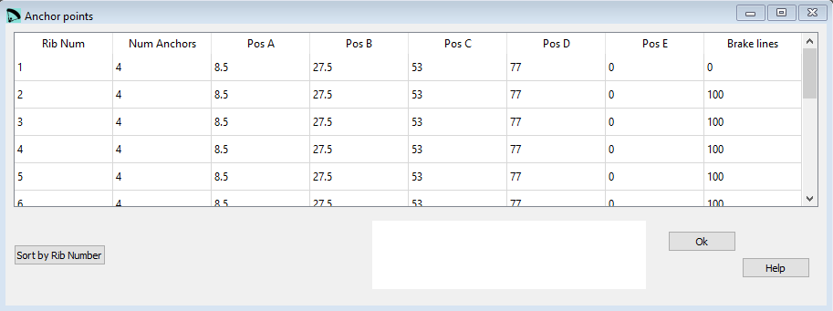

Anchor points¶
In the Anchor points window you can define the parameters from the 3rd section of the lep file.
{kind=link}
Raw data:
*************************************************************
* 3. ANCHOR POINTS *
*************************************************************
* Airf Anch A B C D E F
1 4 8.5 27.5 53 77 0 0
2 4 8.5 27.5 53 77 0 0
3 4 8.5 27.5 53 77 0 0
4 4 8.5 27.5 53 77 0 0
5 4 8.5 27.5 53 77 0 0
6 4 8.5 27.5 53 77 0 0
7 4 8.5 27.5 53 77 0 0
8 4 8.5 27.5 53 77 0 0
9 4 8.5 27.5 53 77 0 0
10 4 8.5 27.5 53 77 0 0
11 4 8.6 27.5 53 77 0 100
12 3 9.0 40.0 75 0 0 100
13 0 0 0 0 0 0 100
14 4 0.0 30 60 90 0 0
Rib num¶
Number of the rib for which the line defines the anchor positions.
Num Anchors¶
Defines how many anchors (A…E) must be taken into account during processing. Brake lines must not be included here.
Pos A¶
Position of the A-lines anchor point in [% chord]. Insert 0 if you do not need this anchor.
Pos B¶
Position of the B-lines anchor point in [% chord]. Insert 0 if you do not need this anchor.
Pos C¶
Position of the C-lines anchor point in [% chord]. Insert 0 if you do not need this anchor.
Pos D¶
Position of the D-lines anchor point in [% chord]. Insert 0 if you do not need this anchor.
Pos E¶
Position of the E-lines anchor point in [% chord]. Insert 0 if you do not need this anchor.
Brake lines¶
Position of the brake lines anchor point in [% chord]. Insert 0 if you do not need this anchor.
Sort by Rib Number¶
The button Sort by Rib Number can be used to rearrange the definition lines. If for whatever reasons you will rearrange the lines, just define the rib numbering in an ascending order and press the Order button afterwards. Lepg will reorder the lines according to the numbering you’ve choosen.
ATTENTION you have to order the lines in a way that the wing is defined from the middle to the tip.
A more detailed description you can find here Laboratori d'envol website.